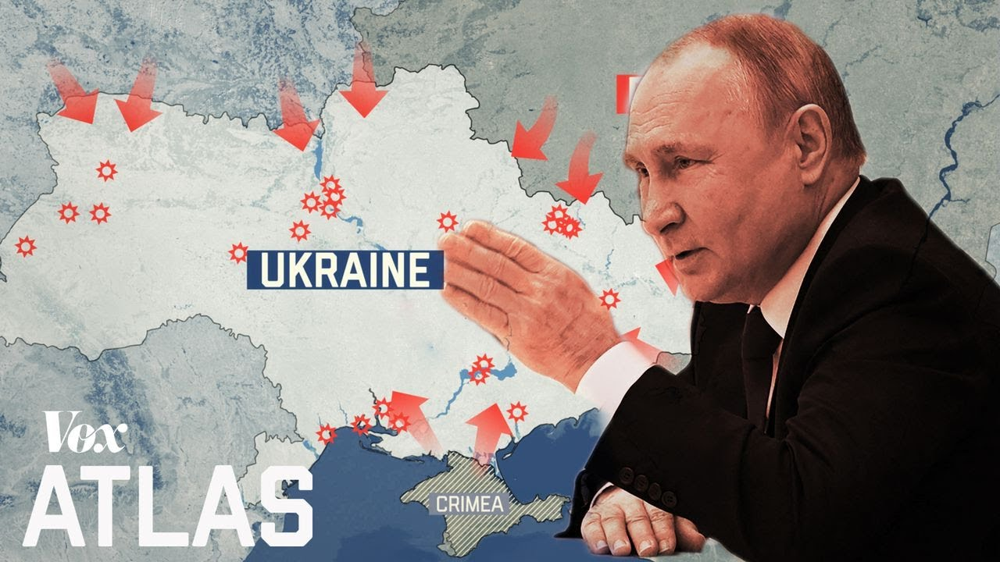

【普京对乌克兰发动的战争，解析】
Summary: Putin launched a full-scale invasion of Ukraine, claiming it as a "special military operation," targeting Kyiv and causing mass displacement. The conflict stems from historical tensions, NATO expansion, and Putin's desire to redraw Europe's map by force.
摘要： 普京以“特别军事行动”为名对乌克兰发动全面入侵，目标直指基辅，导致大规模流离失所。这场冲突源于历史紧张局势、北约扩张以及普京武力重绘欧洲地图的野心。

⏱️ Estimated Reading Time: 11 min
[in Russian] "I have made the decision to carry out a special military operation."
[俄语] “我已决定开展一次特别军事行动。”
Putin called this a "special military operation".
普京称此为“特别军事行动”。
But it's clear, this is a full scale invasion.
但显然，这是一场全面入侵。
"There was total panic. Hysteria. Tears."
“到处都是恐慌、歇斯底里和泪水。”
"The flame was higher than the house."
“火焰比房子还高。”
"We're like, in a cellar."
“我们就像躲在地窖里。”
"I'm not sure if it's like deep enough to help us to survive."
“我不确定它是否足够深以让我们活下来。”
Russian troops and tanks have entered Ukraine on all fronts.
俄罗斯军队和坦克已从各条战线进入乌克兰。
All these cities are under attack, including the capital of Kyiv which has become Putin’s main target.
所有这些城市都遭到袭击，包括已成为普京主要目标的基辅。
Many are sheltering in basements and metro stations across Ukraine.
许多人在乌克兰各地的地下室和地铁站避难。
There have been hundreds of casualties and over half a million Ukrainians have been forced to flee their homes.
已有数百人伤亡，超过50万乌克兰人被迫逃离家园。
This is one of Europe’s largest wars since World War II.
这是自二战以来欧洲最大规模的战争之一。
Since then, Europe’s map has been shaped by political alliances.
自那时起，欧洲的地图由政治联盟塑造。
But now, Putin wants to redraw Europe’s map by force.
但现在，普京想用武力重绘欧洲地图。
Putin has long claimed Ukraine belongs to Russia and they are one people.
普京长期宣称乌克兰属于俄罗斯，两国人民同属一族。
"We're not just close neighbors, we're one nation."
“我们不仅是近邻，更是一个民族。”
But Ukraine is a sovereign nation with its own language, culture, and political system.
但乌克兰是一个拥有自己语言、文化和政治体系的主权国家。
And while the two countries do have a shared history Ukraine has fought hard for its own identity.
尽管两国确有共同历史，乌克兰仍为自身身份奋力抗争。
Ukraine was part of the Russian Empire in the 18th and 19th centuries.
18至19世纪，乌克兰是俄罗斯帝国的一部分。
In 1917, the Russian Revolution brought down the empire and the region spiraled into a civil war.
1917年，俄国革命推翻了帝国，该地区陷入内战。
Ukraine briefly gained independence from Russian rule but was quickly taken over by the newly created Soviet Union as one of its first republics.
乌克兰短暂脱离俄国统治独立，但很快被新成立的苏联吞并，成为其首批加盟共和国之一。
Over the next decade, the Soviet Union brutally expanded its control.
随后十年间，苏联残酷扩张其控制范围。
And by the end of WWII, it forged a sphere of influence over here.
二战结束时，它在此建立了势力范围。
While the west held its influence over here.
而西方则在此保持影响力。
Essentially dividing Europe and marking the beginning of the Cold War.
实质上分裂了欧洲，标志着冷战开始。
The Soviet Union installed communist governments on their side which were easy for them to control.
苏联在其势力范围内扶植易于控制的共产主义政府。
But the west developed into democracies with capitalist economies.
而西方则发展为资本主义经济的民主国家。
The deep ideological divide fueled distrust and tensions between the two sides.
深刻的意识形态分歧加剧了两方的不信任与紧张。
And soon these spheres hardened into military alliances.
很快这些势力范围固化为军事联盟。
In 1949, these countries along, with the US and Canada formed the North Atlantic Treaty Organization, or NATO and promised to defend each other from invasion.
1949年，这些国家与美国、加拿大组成北约，承诺共同抵御入侵。
A few years later, these countries joined the Soviet-led Warsaw Pact alliance.
几年后，这些国家加入苏联主导的华沙条约组织。
And each side built up its military to protect itself from the other.
双方均加强军力以防范对方。
Europe remained this way for decades, until one side finally collapsed.
欧洲如此维持数十年，直至一方最终崩溃。
By late 1991, republics like Ukraine began declaring independence from Soviet domination.
1991年底，乌克兰等共和国开始宣布脱离苏联统治独立。
The Soviet Union dissolved into 15 independent countries, including a much weaker Russia.
苏联解体为15个独立国家，包括实力大减的俄罗斯。
And the Soviet sphere of influence disappeared as many countries overthrew their communist governments.
随着多国推翻共产主义政府，苏联势力范围消失。
Even though the Cold War ended the alliance on the other side of Europe was still going strong.
尽管冷战结束，欧洲另一侧的联盟仍势头强劲。
In fact, it was expanding.
事实上，它正在扩张。
In 1999, Poland, Hungary, and the Czech Republic joined NATO.
1999年，波兰、匈牙利和捷克加入北约。
In 2004, seven more countries joined.
2004年，又有七国加入。
That moved NATO into the old Soviet sphere of influence.
这使北约进入原苏联势力范围。
Making NATO's border with Russia the longest it's ever been.
令北约与俄罗斯的边界达到史上最长。
Belarus, Ukraine, and Georgia were now the last post-Soviet countries left between Russia and NATO.
白俄罗斯、乌克兰和格鲁吉亚成为俄与北约间仅存的苏联解体后国家。
But Ukraine and Georgia both wanted to join NATO for a long time.
但乌克兰与格鲁吉亚长期希望加入北约。
And that made them prime targets for Russia.
这使它们成为俄罗斯的主要目标。
Ukraine became a NATO partner in 1994 which brought them a step closer to becoming a member.
1994年乌克兰成为北约伙伴国，离成员资格更近一步。
"Ukraine will be in NATO."
“乌克兰将加入北约。”
"This is a historic event for our people."
“这对我们人民是历史性事件。”
And in 2013, they were going to sign an association agreement with the European Union.
2013年，乌克兰计划与欧盟签署联系国协定。
But when it came time to sign the deal Ukraine’s pro-Russian government refused.
但亲俄的乌克兰政府最终拒绝签署。
Instead they chose to strengthen ties with Russia.
转而选择加强与俄罗斯的关系。
After the decision was announced, hundreds of thousands of protesters took to the streets to demand the agreement be signed.
决定公布后，数十万抗议者上街要求签署协议。
[chanting] Ukraine is Europe! Ukraine is Europe!
[口号] 乌克兰属于欧洲！乌克兰属于欧洲！
After months of peaceful protests, the Ukrainian president cracked down and killed more than 100 people.
数月和平抗议后，乌总统镇压并杀害超百人。
Sparking more protests which eventually drove the president out of office and the country.
引发更多抗议，最终迫使总统下台并流亡。
This meant Putin would lose political influence over Ukraine.
这意味着普京将失去对乌克兰的政治影响力。
So he decided to use force instead.
于是他决定动用武力。
First, he invaded and annexed Ukraine’s Crimean Peninsula.
首先，他入侵并吞并乌克兰克里米亚半岛。
Then, Russia-backed separatists captured the regions of Donetsk and Luhansk and declared them independent of Ukraine.
随后，俄支持的分裂分子占领顿涅茨克与卢甘斯克地区并宣布独立。
Since then, Ukraine has been locked in a conflict with Russia that has killed 14,000 people and displaced nearly 2 million people.
此后乌克兰陷入与俄冲突，致1.4万人死亡，近200万人流离失所。
For nearly eight years, Putin has held on to these regions destabilizing Ukraine, and keeping it from moving closer to the west.
近八年来，普京控制这些地区以破坏乌稳定，阻止其靠拢西方。
But in November 2021, Putin decided to go all in.
但2021年11月，普京决定孤注一掷。
Satellite images showed at least 100,000 Russian troops and military equipment piling up along the border of Ukraine.
卫星图像显示至少10万俄军及装备集结乌边境。
Putin repeatedly denied any plans to invade.
普京多次否认入侵计划。
But weeks later, he presented his demands to the west.
但数周后，他向西方提出要求。
His main demand was that NATO stop expanding and move its military borders back to where they were in 1997 away from Russia’s.
其主要要求是北约停止扩张并将军事边界退回1997年位置，远离俄罗斯。
Western leaders rejected his demands.
西方领导人拒绝其要求。
Instead, they put forces on standby and reinforced their military presence in Eastern Europe.
反而让部队待命并加强在东欧的军事存在。
Back at Ukraine’s border, Russian troops continued to gather.
而在乌边境，俄军持续集结。
And over here, along its border with Belarus, Russia began conducting huge military drills.
同时在与白俄罗斯边境，俄开始大规模军演。
On February 21st, the threat of war became real.
2月21日，战争威胁成真。
"I consider it necessary to take a long-overdue decision and to immediately recognize the independence and sovereignty of the Donesk People's Republic and the Lugansk People's Republic."
“我认为有必要做出迟来的决定，立即承认顿涅茨克人民共和国与卢甘斯克人民共和国的独立与主权。”
His troops immediately crossed the Ukrainian border into Russian-backed separatist regions under the pretense of peacekeeping.
俄军随即以维和名义越境进入俄支持的分裂地区。
Ukraine announced a state of emergency and President Zelensky made a direct appeal to the Russian people.
乌克兰宣布进入紧急状态，泽连斯基总统直接向俄民众喊话。
"A war will take away guarantees from everyone."
“战争将夺走所有人的保障。”
"No one will have security guarantees."
“无人能享有安全保证。”
"Who will suffer the most? The people."
“谁将受害最深？人民。”
"Who doesn't want it the most? The people."
“谁最不愿如此？人民。”
"Who can stop it? The people."
“谁能阻止它？人民。”
Hours later on February 24th Putin launched a full-scale invasion in Ukraine.
数小时后，2月24日，普京对乌发动全面入侵。
World leaders have spoken out against Russia’s invasion.
世界领导人纷纷谴责俄入侵。
“We condemn this barbaric attack and the cynical arguments to justify it."
“我们谴责这野蛮攻击及为其辩护的厚颜说辞。”
“This hideous and barbaric venture of Vladimir Putin must end in failure."
“普京这丑陋野蛮的行径必将失败。”
“Putin chose this war and now he and his country will bear the consequences.”
“普京选择了战争，如今他和他的国家将承担后果。”
Anti-war protests have broken out around the world.
全球爆发反战抗议。
Including in Russia, despite the risk of arrest.
包括在俄罗斯，尽管面临被捕风险。
Neighboring nations have opened their borders as hundreds of thousands of Ukrainians attempt to flee.
邻国开放边境，因数十万乌克兰人试图逃离。
NATO’s response force has been activated for the first time in history.
北约反应部队史上首次被激活。
And the US has sent additional troops to eastern Europe.
美国也向东欧增派部队。
But in many ways, the world is treading carefully.
但多方考量下，世界行动谨慎。
Putin controls the world’s largest arsenal of nuclear weapons and has already threatened anyone who might interfere.
普京掌控全球最大核武库，并已威胁任何可能干预者。
"Whoever tries to stop us should know that Russia's response will be immediate."
“任何试图阻止我们的人都应知道，俄方将立即回应。”
"And will lead to such consequences that you have never faced in your history."
“并导致你们史上未见的后果。”
So countries around the world are imposing some of the harshest economic sanctions to slow Putin down.
因此各国正实施最严厉经济制裁以拖慢普京。
And sending tons of military aid to support Ukraine.
并运送大量军事援助支持乌克兰。
For now, Russian forces keep pushing deeper, but Ukraine is fighting back.
目前俄军持续深入，但乌克兰正在反击。
"We are all here protecting our independence, our country."
“我们都在此保卫我们的独立与国家。”
"And we are going to continue to do so."
“我们将继续如此。”